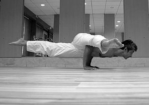

¿Qué es Yoga?
Es un ejercicio físico consciente que tiene consecuencias en la mente. Consta de sostener distintas posturas corporales, meditaciones y ejercicios respiratorios. Los cambios de velocidad y presencia mental tienen efecto en nuestra vida, llevándonos más cerca de nosotros mismos, dándonos mayor claridad y fuerza para caminar hacia donde realmente queremos.
La palabra Yoga viene del prefijo en sánscrito yug, que signigica Unión. Unión de nosotros con nuestro Yo Superior, que viene a ser nuestro lado más verdadero, sabio y lúdico. El Yoga despierta nuestras virtudes y nos devuelve la calma.

Hacer Yoga es Amarte
Somos un grupo de factores en movimiento. Somos diversidad. Somos interceptados por elementos, personas, historias. Somos una esencia que permanece a través del tiempo. Yoga es conectar con el núcleo de nuestra película Que al ser esencia Es innata y lo innato es inmutable Desde el nacer al morir. La esencia es la casa de los dones. Y ellos actúan como disparadores En todo lo que hacemos Yoga es Esencia